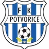
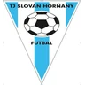
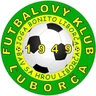

Tabuľky
Ročník 2026/27, poradie podľa Sportnetu.
IV. liga
A-mužstvo
| # | Tím | Z | V | R | P | Skóre | B |
|---|---|---|---|---|---|---|---|
| 1 | 15 | 11 | 2 | 2 | 37:11 | 35 | |
| 2 | 15 | 9 | 5 | 1 | 37:15 | 32 | |
| 3 | 15 | 9 | 3 | 3 | 21:11 | 30 | |
| 4 | OŠK Trenčianske Stankovce | 15 | 8 | 2 | 5 | 32:28 | 26 |
| 5 | 15 | 7 | 4 | 4 | 29:19 | 25 | |
| 6 | 15 | 6 | 5 | 4 | 22:16 | 23 | |
| 7 | 15 | 6 | 4 | 5 | 26:24 | 22 | |
| 8 | 15 | 7 | 0 | 8 | 23:20 | 21 | |
| 9 | 15 | 5 | 5 | 5 | 23:24 | 20 | |
| 10 | 15 | 6 | 1 | 8 | 26:28 | 19 | |
| 11 | 15 | 5 | 4 | 6 | 22:19 | 19 | |
| 12 | 15 | 5 | 3 | 7 | 19:26 | 18 | |
| 13 | 15 | 5 | 2 | 8 | 19:25 | 17 | |
| 14 | 15 | 3 | 3 | 9 | 12:29 | 12 | |
| 15 | 15 | 2 | 3 | 10 | 18:45 | 9 | |
| 16 | 15 | 3 | 0 | 12 | 20:46 | 9 |
VII. liga ObFZ Trenčín
B-mužstvo
| # | Tím | Z | V | R | P | Skóre | B |
|---|---|---|---|---|---|---|---|
| 1 | OŠK Trenčianske Stankovce B | 14 | 12 | 1 | 1 | 45:17 | 37 |
| 2 | 14 | 9 | 2 | 3 | 43:17 | 29 | |
| 3 | 14 | 9 | 1 | 4 | 44:19 | 28 | |
| 4 | 14 | 8 | 3 | 3 | 32:19 | 27 | |
| 5 |  FK Potvorice | 14 | 7 | 2 | 5 | 35:29 | 23 |
| 6 | 14 | 6 | 3 | 5 | 25:27 | 21 | |
| 7 | 14 | 6 | 3 | 5 | 44:32 | 21 | |
| 8 | 14 | 6 | 3 | 5 | 28:24 | 21 | |
| 9 | 14 | 5 | 3 | 6 | 22:32 | 18 | |
| 10 | 13 | 5 | 0 | 8 | 29:34 | 15 | |
| 11 | 14 | 5 | 0 | 9 | 26:47 | 15 | |
| 12 | 13 | 3 | 4 | 6 | 21:31 | 13 | |
| 13 | 14 | 2 | 4 | 8 | 13:36 | 10 | |
| 14 | 14 | 2 | 3 | 9 | 15:31 | 9 | |
| 15 | TJ Družstevník Mníchova Lehota | 14 | 2 | 2 | 10 | 20:47 | 8 |
IV. liga U19 ZsFZ
Starší dorast U19
| # | Tím | Z | V | R | P | Skóre | B |
|---|---|---|---|---|---|---|---|
| 1 | OŠK Trenčianske Stankovce | 10 | 9 | 0 | 1 | 56:10 | 27 |
| 2 | 10 | 7 | 2 | 1 | 32:9 | 23 | |
| 3 | 10 | 7 | 1 | 2 | 27:17 | 22 | |
| 4 | 10 | 4 | 3 | 3 | 29:37 | 15 | |
| 5 | 10 | 5 | 0 | 5 | 36:30 | 15 | |
| 6 | 10 | 4 | 2 | 4 | 31:19 | 14 | |
| 7 | MŠK Púchov B | 10 | 4 | 1 | 5 | 25:21 | 13 |
| 8 | 10 | 4 | 1 | 5 | 26:26 | 13 | |
| 9 | 10 | 3 | 0 | 7 | 24:39 | 9 | |
| 10 | 10 | 1 | 2 | 7 | 13:46 | 5 | |
| 11 | 10 | 1 | 0 | 9 | 19:64 | 3 |
IV. liga starších žiakov U15 ObFZ Trenčín
Starší žiaci U15
| # | Tím | Z | V | R | P | Skóre | B |
|---|---|---|---|---|---|---|---|
| 1 | 14 | 11 | 1 | 2 | 74:21 | 34 | |
| 2 | OŠK Trenčianske Stankovce | 14 | 10 | 3 | 1 | 101:15 | 33 |
| 3 | 14 | 10 | 0 | 4 | 67:17 | 30 | |
| 4 | 13 | 9 | 2 | 2 | 57:16 | 29 | |
| 5 | 14 | 8 | 1 | 5 | 39:24 | 25 | |
| 6 | TJ Tatran Bobot | 14 | 7 | 3 | 4 | 50:19 | 24 |
| 7 | 14 | 7 | 1 | 6 | 26:32 | 22 | |
| 8 | 14 | 7 | 0 | 7 | 58:31 | 21 | |
| 9 | 14 | 6 | 2 | 6 | 34:35 | 20 | |
| 10 | 14 | 5 | 4 | 5 | 54:41 | 19 | |
| 11 | 14 | 6 | 1 | 7 | 35:38 | 19 | |
| 12 | 14 | 5 | 2 | 7 | 56:53 | 17 | |
| 13 | 14 | 2 | 0 | 12 | 17:105 | 6 | |
| 14 | 14 | 1 | 0 | 13 | 7:127 | 3 | |
| 15 | 13 | 0 | 0 | 13 | 4:105 | 0 |
IV. liga mladších žiakov U13 ObFZ Trenčín
Mladší žiaci U13
| # | Tím | Z | V | R | P | Skóre | B |
|---|---|---|---|---|---|---|---|
| 1 | OŠK Trenčianske Stankovce | 9 | 9 | 0 | 0 | 83:11 | 27 |
| 2 | 9 | 8 | 1 | 0 | 53:6 | 25 | |
| 3 | 9 | 8 | 0 | 1 | 55:12 | 24 | |
| 4 | 9 | 7 | 2 | 0 | 47:3 | 23 | |
| 5 | 9 | 6 | 1 | 2 | 61:10 | 19 | |
| 6 | 9 | 6 | 0 | 3 | 33:17 | 18 | |
| 7 |  TJ Slovan Horňany | 9 | 5 | 0 | 4 | 41:24 | 15 |
| 8 | 9 | 5 | 0 | 4 | 40:23 | 15 | |
| 9 | 9 | 4 | 2 | 3 | 24:22 | 14 | |
| 10 | 9 | 4 | 1 | 4 | 17:19 | 13 | |
| 11 | 9 | 4 | 0 | 5 | 32:37 | 12 | |
| 12 | 9 | 4 | 0 | 5 | 24:26 | 12 | |
| 13 | 9 | 3 | 2 | 4 | 19:30 | 11 | |
| 14 | TJ Tatran Bobot | 9 | 2 | 1 | 6 | 16:31 | 7 |
| 15 | 8 | 2 | 1 | 5 | 10:46 | 7 | |
| 16 |  FK Vlára Ľuborča | 9 | 2 | 1 | 6 | 16:42 | 7 |
| 17 | 8 | 1 | 0 | 7 | 26:37 | 3 | |
| 18 | 9 | 1 | 0 | 8 | 12:48 | 3 | |
| 19 | 9 | 0 | 0 | 9 | 10:87 | 0 | |
| 20 | 9 | 0 | 0 | 9 | 4:104 | 0 |
U11, U9: prípravky hrajú bez tabuľky.